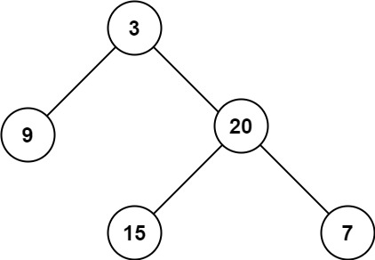

books / hot100 / 03-题解 / 08-二叉树
104. 二叉树的最大深度
题目与约束
给定一个二叉树 root ，返回其最大深度。
二叉树的 最大深度 是指从根节点到最远叶子节点的最长路径上的节点数。
示例 1：

输入：root = [3,9,20,null,null,15,7]
输出：3
示例 2：
输入：root = [1,null,2]
输出：2
提示：
- 树中节点的数量在
[0, 104]区间内。 -100 <= Node.val <= 100
核心不变量
节点深度等于左右子树最大深度加一。
完整推导
思路推导
-
直觉与痛点（数节点）：
就像数一棵真实大树有多高一样，你要从树根一直爬到最顶端的树叶。但是树有很多分叉，你该爬哪一边？显然，两边都要去试试，看看哪边更高。
-
破局思路（递归法 / 深度优先搜索 DFS）：
假设你站在这棵树的树根前，想要知道这棵树有多高，但是你视力不好看不清。你可以把任务外包给你的两个小弟：
- 让小弟 A 去量一量左子树的最大高度。
- 让小弟 B 去量一量右子树的最大高度。
- 等他们俩汇报完，你只要挑出那个最大的数字，然后加上你自己这层的 1，不就是整棵树的最大深度了吗！
-
逻辑推演（微操设定）：
- 公式：
最大深度 = max(左子树深度, 右子树深度) + 1 - 终止条件（外包到头了）：如果当前是个空节点（比如叶子节点的下面），深度是多少？显然是
0。
Java 实现（满分版）
- 公式：
/**
* Definition for a binary tree node.
* public class TreeNode {
* int val;
* TreeNode left;
* TreeNode right;
* TreeNode() {}
* TreeNode(int val) { this.val = val; }
* TreeNode(int val, TreeNode left, TreeNode right) {
* this.val = val;
* this.left = left;
* this.right = right;
* }
* }
*/
class Solution {
public int maxDepth(TreeNode root) {
// 1. 递归的终止条件：如果是空节点，高度就是 0
if (root == null) {
return 0;
}
// 2. 深入敌后：去向左子树和右子树要答案
int leftDepth = maxDepth(root.left);
int rightDepth = maxDepth(root.right);
// 3. 汇总结果：左右两边谁更高，就取谁，再加上自己的 1 层高度
return Math.max(leftDepth, rightDepth) + 1;
}
}
复杂度
- 时间复杂度：O(N)。树中的每一个节点都会被精确地访问一次（外包任务派发下去再收回来）。
- 空间复杂度：O(H)。其中 H 是树的高度。这是递归调用所消耗的系统栈空间。最坏情况（树是一条向一边偏的直线）是 O(N)，平均情况（比较平衡的树）是 O(log N)。
易错点与扩展（面试喜欢怎么变体）
- 极简主义的诱惑：
- 上面的代码略显啰嗦，大牛们通常会把它压缩成一行：
return root == null ? 0 : Math.max(maxDepth(root.left), maxDepth(root.right)) + 1;
- 建议：虽然一行代码看起来很帅，但在真实的白板面试中，建议还是像上面我给的标准版那样分行写。这样不仅思路清晰，还方便你在调试时打印
leftDepth和rightDepth的值。
- 面试追问：“如果这是一棵巨大的树，递归导致栈溢出怎么办？你能用迭代（非递归）来求最大深度吗？”
- 满分抢答：绝对可以！使用层序遍历（广度优先搜索 BFS）。
- 思路简述：就像往树上泼水，水会一层一层往下流。我们用一个队列（Queue），先把根节点装进去。然后开始循环，每次循环开始时，队列里的节点数量就是这一层的所有节点。把这一层的节点全部弹出，并把它们的左右孩子全部塞进队列。每一轮大循环，深度就加 1。直到队列为空，水流到底了，深度也就求出来了。时间复杂度依然是 O(N)。
力扣原题
其他语言实现
C++ 实现
实现来源：代码随想录（programmercarl.com）
int leftdepth = getdepth(node->left); // 左
int rightdepth = getdepth(node->right); // 右
int depth = 1 + max(leftdepth, rightdepth); // 中
return depth;
Python 实现
实现来源：代码随想录（programmercarl.com）
class Solution:
def maxdepth(self, root: treenode) -> int:
return self.getdepth(root)
Go 实现
实现来源：代码随想录（programmercarl.com）
/**
* definition for a binary tree node.
* type treenode struct {
* val int
* left *treenode
* right *treenode
* }
*/
func max (a, b int) int {
if a > b {
return a;
}
return b;
}
// 递归
func maxdepth(root *treenode) int {
if root == nil {
return 0;
}
return max(maxdepth(root.left), maxdepth(root.right)) + 1;
}
C 实现
实现来源：代码随想录（programmercarl.com）
int maxDepth(struct TreeNode* root){
//若传入结点为NULL，返回0
if(!root)
return 0;